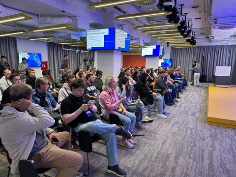

Недавно в одном канале видел восхищение человеком, который кодил в самолете. Да-да, без сети, и, соответственно, без курсора. Теперь это, видимо, заслуживает уважение. Вот в наши времена для разработки интернет был в общем-то не нужен. Ну иногда в стековерфлоу что-то поискать, и то можно обойтись без этого. Да и vim-у интернет до лампочки. Я и сам немало кода написал как раз в самолете, включая новые сервисы на малознакомых языках.
В более древние эпохи ведь вообще без интернета как-то умудрялись код писать. Один мой старший коллега рассказывал про времена, когда чтобы поиграть в игру, нужно было сначала написать игру. Только вместо стековерфлоу были журналы!
А сейчас без сети мы как будто отключены от мира вовсе. И не только в разработке. Многие игры (даже не многопользовательские) сейчас без интернета не запускаются (кажется, плойка вообще не пашет оффлайн). Кино без интернета не посмотреть, музыку не послушать - все перешли на стриминговые сервисы, культуры локального хранения медиа почти не осталось (хотя у меня есть вертак и винил на случай апокалипсиса).
Умный дом превращается в тыкву. Связаться с людьми не получится (все ушло в мессенджеры - у вас вообще много телефонов людей есть? а смску вы когда последний раз отправляли?). Оплатить покупку не получится, сервисы не работают (как показал блекаут мобильного интернета весной - инфраструктура города встает колом). Маршрут не построить, расписание автобусов не посмотреть - если из вас выдернуть провод, вы так и будете беспомощно стоять посреди города и не понимать, куда и зачем вам идти.
А что дальше? Не попасть домой, потому что умный замок тебя не узнает? Не попить кофе, потому что кофемашина управляется только со смартфона? Не сделать воду погорячее, если Grohe таймаутит? Не получится воспользоваться смывом в унитазе при недоступности сервера Villeroy&Boch? Нафиг такое будущее.
И с одной стороны, все современные технологии добавляют удобства. Но завязываться на них в критичных вопросах без резервирования - так себе затея. В конце концов, Илья Сегалович еще 22 года назад говорил "1. Прогресс неостановим. 2. Работать всё равно ничего не будет". Давайте уметь обходиться без always-on сети и уметь получать удовольствие от жизни не-в-экране.
